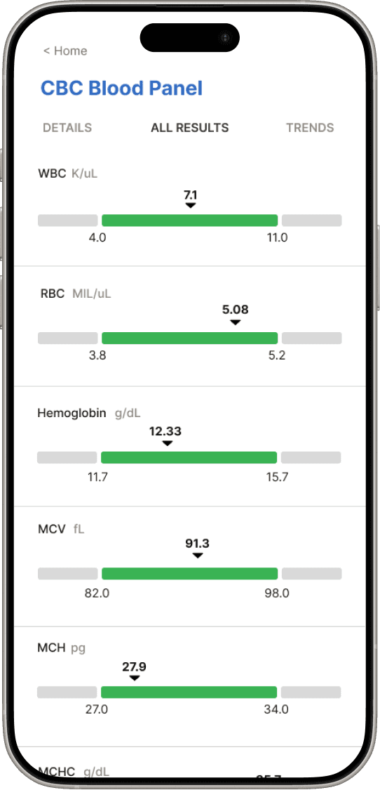

Case Study: ConnectMyHealth
Helping people make informed healthcare decisions
TL;DR
Healthcare information in one place
ConnectMyHealth is a digital health portal for accessing and managing healthcare information. As the sole UX Designer on the redesign, I led research, information architecture, wireframes and high-fidelity mockups for a patient-centered experience serving a population of over four million.
- My role
- UX Designer & Researcher
- Team
- Product manager, UI designer, software developers and product owners
Background
From clinician-centered to patient-centered
The existing app was designed around hospitals and clinicians. Patients and caretakers needed a portal that reflected their own goals and helped them understand their health information.
Problem
Disconnected records, difficult decisions
Patients and caretakers in Southwestern Ontario had to gather information from disconnected sources, including phone calls to providers and scattered paper records. Dense, conflicting navigation made the existing digital experience harder to use.
Research
Building the case for usability testing
Competitive and heuristic analysis identified major usability issues. Some stakeholders initially preferred focus groups under internal governance policies; I advocated for usability testing to obtain actionable evidence and aligned stakeholders on its value.
Testing
Nine participants, more than forty friction points
I conducted a baseline usability study with nine individuals across login and onboarding, allergies, test results and trending results. I synthesized over forty friction points into an affinity map and prioritized themes: clearer navigation, greater customizability, consolidated menus and more visual, intuitive interactions.
Process
Turning findings into design decisions
The study informed wireframes, mid-fidelity and high-fidelity prototypes. I iterated on navigation and high-impact flows to reduce cognitive load and improve clarity.
Final product
A clearer patient portal
The redesign includes streamlined onboarding, visual test-result displays and simplified navigation. It brings healthcare information together in a patient-centric progressive web app.

Impact
A foundation for informed care
The redesign supports access to healthcare information for a population of over four million. It also established baseline usability evidence to guide product decisions. The existing case study reports improved satisfaction; it does not provide a quantified before-and-after measure.